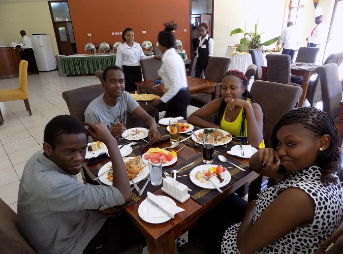

Welcome to our Teens Church!
At a time where answers to almost everything in life are being sought out, we are raising a generation that
seeks out their identity in Christ, and are effecting their identity in their spaces
A generation grounded in God’s identity
Mankind has and is always searching for meaning of life. We have always asked. Who are we? Where
did we come from? Why are we here? What’s the point of living? Is there life beyond this earth? The
intensity of these questions come during the transit period of the teenage season. How this season of
life is handled will determine an individual’s outcome.
Our joy and glow is always to guide our
young men and women into understanding this life and their purpose on the earth from the truth of God’s
Word. At a time where there are all sorts of voices are coming at them from everywhere, we teach them to
use the Word of God as a filter for truth. We create an extremely fun experience for them as we lead
them towards Jesus and walk with them in their salvation.
Joyful even in service
We strive to present our pursuit of the Kingdom of God not as a laborious and burdensome task, but as a
joyful service towards the King. Within our teens program we have incorporated various activities that are
aimed towards molding our teenagers into God’s design.
Seminarson
“My people perish because of lack of knowledge”. In the Kingdom of God, knowledge is used to transform a
people. When you afford a certain people a certain knowledge you empower their lifestyle to change; and
we do the same. Every holiday that our teens are around we ensure that we organise seminars where we
invite various speakers to address issues that they are going through and prepare them for life. These
sessions are fun and interactive to create open sessions for them to share and grow. During these times
we challenge them to look inwardly and challenge themselves towards what God had prepared for them to
walk into.
Nature Hikes
Isn’t what God has made beautiful?! He certainly thought so Himself! One of the things that we have
observed is that the young generation hardly engage in physical activity. Most of them are usually
hurdled in the house maybe just watching movies and playing games. To break this norm, we periodically
organise hikes all over the country and take our teens challenging them physically and also mentally; to
teach them how with the challenges that come with life they have the ability to collect themselves and
pull through. We have previously gone to Kilimambogo, Hell’s gate and Longonot. Come join us as we build
ourselves and bond over our hikes.
Camps
Similar to our seminars, we often take our teens away from church to a far off campsite to give them a
different experience of life. In an environment where they have everything that they need, we give them
a different experience and perspective to life as we teach and remind them concerning Godly values. In
addition to this, we hold several bonding activities with them to just have an amazing interactive
session and allow them to form a fellowship amongst themselves. Our camps take around four to five days
and we head out with our teens facilitators.
Events and Dinners
Once in a while we organize events for our teens where we meet them up and have a good time and
have a feel of where they are in life. Such sessions are unplanned for and have an ability to be amazing
one on one sessions between the facilitators and the teens. These events range from swimming to sports
to themed events like based on bible based characters and the like. Our desire is to raise teenagers who
find a home in the church where we find an opportunity to introduce them to Jesus. We always hope that
the ways that we instruct them in they shall follow and have the greatest encounters with God as they
grow up.

Want to serve in the teens church?
As Teens Facilitators, our hearts are bent towards mentoring the people who are behind us. If you
share the same heart, why don’t you reach out to us and join our amazing team?!